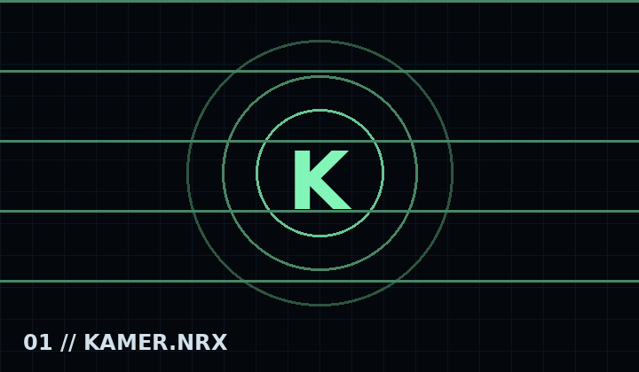
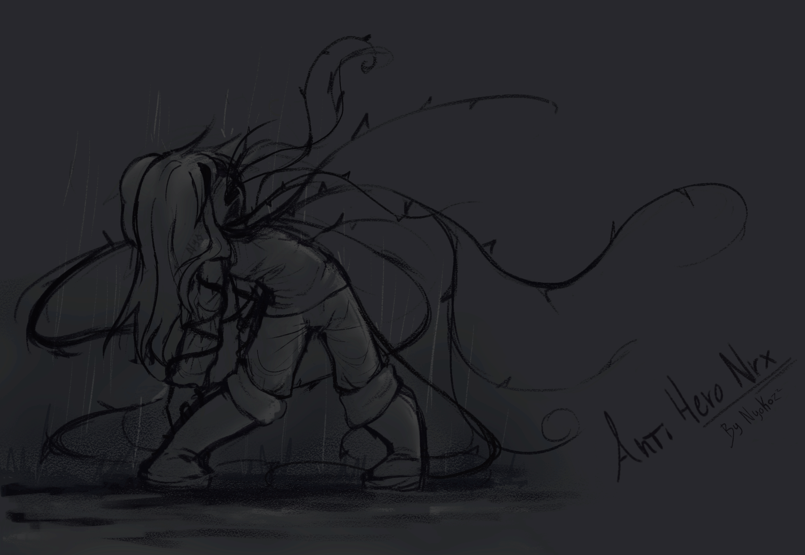

Figura principal de la Temporada 1 y primer punto de entrada a la ruptura de realidades de NRX.
><

Sujeto central
Historia
Kamer abre la historia oficial de NRX : Reality Break. Su temporada presenta las primeras anomalías, el conflicto entre supervivencia y control, y el inicio del recorrido que conecta las realidades del proyecto.
“Toda ruptura comienza con una primera señal.”
Canciones
Ecosystem
FILTRACION // ECOSYSTEM
Video filtrado
Material visual asociado a Ecosystem.
Froster Legacy
FILTRACION // FROSTER LEGACY
Video filtrado
Material visual asociado a Froster Legacy.
My Last World
Antihero
FILTRACION // ANTI HERO
Imagen filtrada
Ilustracion asociada a Anti Hero.

Mecánicas y presentación
Modo clásico
Opponent cover
Karaoke
Galería
Señal animada del expedienteEspacio para sprite oficialEspacio para arte conceptual
Explora la pre-demo y la demo pública anteriores a NRX: Natural, Ecosystem, Permafrost, diálogos, pantallas de carga, sprites, videos, escenarios y conceptos antiguos de Kamer.